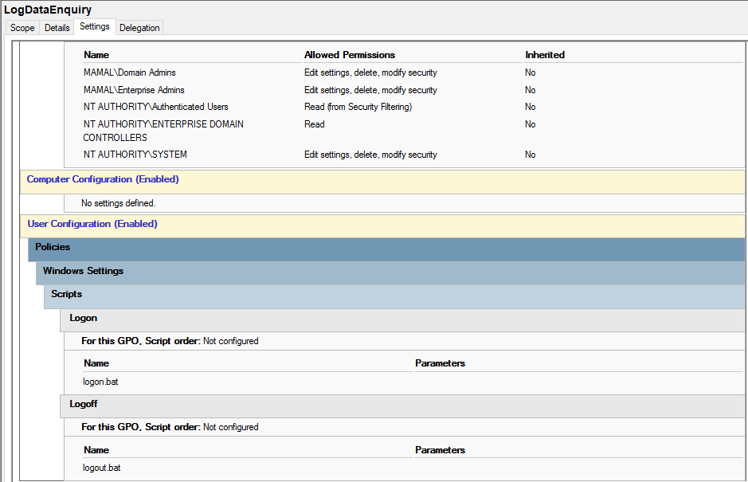

Log Data Enquiry (User Activity Logging)
Purpose
This policy records user login and logoff activity within the computer lab. It captures essential data such as username, computer name, login time, and logoff time for monitoring, auditing, and administrative analysis.
How it works
The policy executes scripts during both logon and logoff events. These scripts collect user session data and store it in a central log file or database for tracking user activity across lab machines.
How it is applied
- Open Group Policy Management Console (GPMC)
- Edit the User Configuration policy
- Navigate to: User Configuration → Windows Settings → Scripts (Logon/Logoff)
- Add script for Logon (records login time, username, computer)
- Add script for Logoff (records logoff time)
- Ensure script writes data to a central storage location
- Apply policy and run
gpupdate /force
Data Captured
- Username
- Computer name
- Login time
- Logoff time
Impact
- Enables user activity tracking
- Supports auditing and reporting
- Improves lab accountability
- Assists in troubleshooting user sessions
Screenshot
Logon and logoff script configuration in Group Policy:
